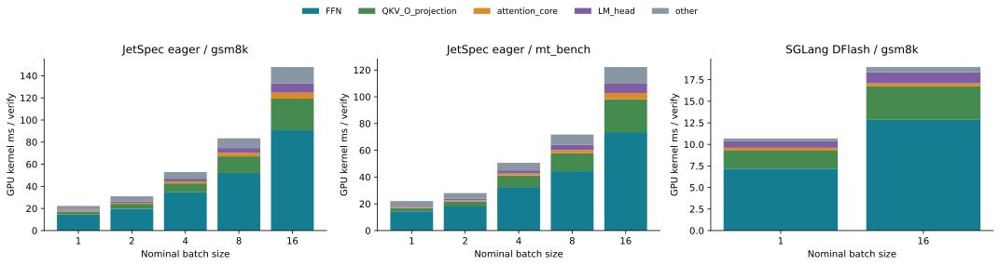

报告索引Verify：FFN、attention 与 LM head
2026-11-05（北京时间）· RTX 5090 · Qwen3-8B BF16 · 只重分析已有 trace，没有启动新 GPU 推理。
JetSpec 的 BS 扩展数据来自 eager batch_reference，tree budget128；SGLang DFlash 是 CUDA Graph，verify width16。两组实现、输入集及 query 宽度不同，分别解释，不能用绝对时间作引擎公平比较。

图中为全部轮次均值，包含 active BS 下降的 tail；full_active_batch 行只选择实际 active BS 等于标称值的轮次。Kernel 时间之和不是端到端 latency。不同 BS 的短输入与轨迹差异保留。
FFN 包括 gate/up/down GEMM 及中间激活和乘法；attention core 指 QK/softmax/AV kernel；QKV/O 投影另外列出，其他包含 norm、RoPE、KV 写入、拷贝等。不能把所有 GEMM 都标为 FFN，也不能把含 FlashInfer 名称的 norm kernel 标为 attention。
归因通过每轮固定执行顺序恢复，并逐轮校验：JetSpec 253 个 BF16 GEMM，SGLang 145 个；均为36层加一个 LM head；每层有一个 attention core，FFN 激活处在相应投影之间，36层对应角色的 kernel/launch grid 一致。
CSV · 逐轮数据、校验与源码 SHA256。这些短上下文结果不外推为长上下文或任意模型结论。